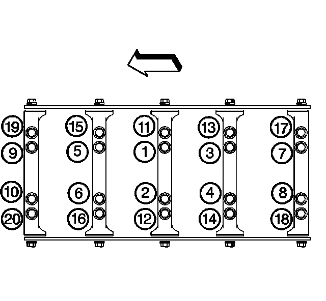

Fastener Tightening Specifications

Crankshaft Bearing Cap M8 Bolts 25 N.m (18 lb ft)
Crankshaft Bearing Cap M10 Bolts
First Pass in Sequence 20 N.m (15 lb ft)
Final Pass in Sequence 80 degrees
Crankshaft Bearing Cap M10 Studs
First Pass in Sequence 20 N.m (15 lb ft)
Final Pass in Sequence 51 degrees